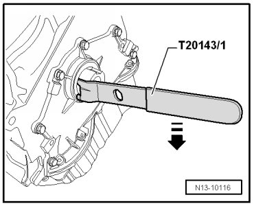
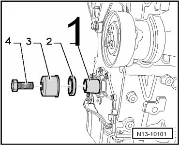

Oil Seal, Vibration Damper Side
Oil Seal, Vibration Damper Side
Special tools, testers and auxiliary items required
• Extractor hook (T20143/1)
• Counter-holder tool (T10069)
• Assembly tool (T10215)
• Torque wrench (V.A.G 1601)
• Torque wrench (V.A.G 1332)
• If a plastic sealing flange is installed, sealing ring cannot be replaced separately and sealing flange must be replaced --> [ Sealing Flange, Vibration Damper Side ] Sealing Flange, Vibration Damper Side.
Removing
- Bring lock carrier into service position. Radiator Support
- Remove ribbed belt --> [ Ribbed Belt ] Ribbed Belt.
- Remove vibration damper. To do so, lock vibration damper using counter-holder tool (T10069).

- Place pulling hook (T20143/1) behind sealing lip of sealing ring as shown in the illustration.
- Support pulling hook (T20143/1) on sealing flange and pry out sealing ring in - direction of arrow -.

Installing
- Before installing, remove oil remains from end of crankshaft with a clean cloth.
- Install guide sleeve (T10215/1) - 1 - onto front of crankshaft journal.
- Carefully slide oil seal - 2 - onto guide sleeve as far as possible.
- Press in oil seal until stop using thrust sleeve (T10215/2) - 3 -. To do this use an old vibration damper securing bolt - 4 -.

• Vibration damper securing bolt must be replaced.
• Tighten securing bolt using torque wrench (V.A.G 1601).
- Install vibration damper and secure using counter-holder tool (T10069).
- Tighten the new bolt to 100 Nm + 1/2 turn (180°).
- Install ribbed belt --> [ Ribbed Belt ] Ribbed Belt.